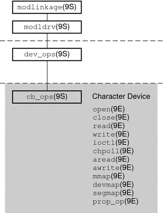

Overview of the Character Driver Structure
Figure 15-1 shows data structures and routines that define the structure of a character
device driver. Device drivers typically include the following elements:
Device-loadable driver section
Device configuration section
Character driver entry points
The shaded device access section in the following figure illustrates character driver entry
points.
Figure 15-1 Character Driver Roadmap

Associated with each device driver is a dev_ops(9S) structure, which in turn refers
to a cb_ops(9S) structure. These structures contain pointers to the driver entry points:
Note - Some of these entry points can be replaced with nodev(9F) or nulldev(9F)
as appropriate.